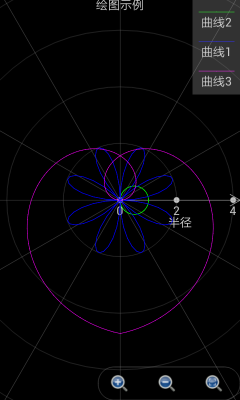
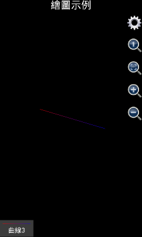
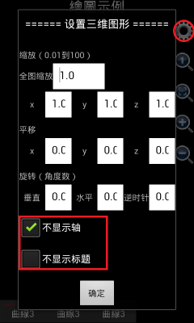
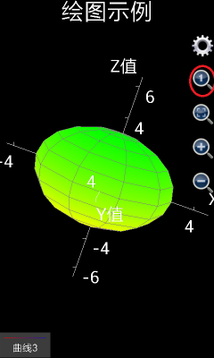
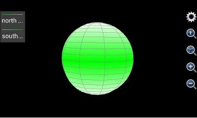
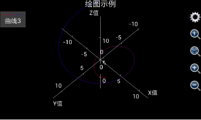

MFP编程语言提供了一系列绘图函数。但是，由于很多时候定义图形的复杂性，这些绘图函数的参数会非常多，每个参数往往还很长。这给用户的输入，特别是安卓平台下用户的输入，带来了巨大的麻烦。
在安卓平台上，用户可以在可编程科学计算器中的智慧计算器中绘图，但是，智慧计算器只能对独立的数学表达式绘图，如果用户需要在指定数值范围绘制一些复杂的图形，则需要使用可编程科学计算器中独立的绘制图形工具。
绘制图形工具支持三种绘图方式：绘制二维图形，绘制极坐标图形和绘制三维图形，他们的绘图模式实际上是类似的，以绘制二维图形为例。首先用户需要对图形本身进行设定，包括图像的名字（也就是图形文件名），标题，x、y坐标轴的名称，和是否显示网格，然后用户点击添加曲线按钮，可以在图像中添加一条曲线（图象最多显示8条曲线）。
定义一条曲线是使用此工具的关键，曲线的标题，颜色，曲线上每个采样点的形状，以及是否显示采样点间的连接线都易于理解，关键什么是t，t的定义范围以及X(t)和Y(t)的定义。
我们知道，任何一个常规坐标上的不分叉二维曲线，都可以看作是一个点随时间运动的轨迹，而这个轨迹在x轴位置上的投影，就是x坐标对于t的函数，也就是X(t)，同理，而这个轨迹在y轴位置上的投影，就是Y(t)。
为什么用这样的方式来定义一条曲线呢？原因在于，有时候一条曲线在同一个x的坐标对应多个y值，或者在同一个y的坐标对应于多个x的值。比如，一个圆形。用智慧计算器中绘图功能，这样的曲线有时无法用单个的表达式描述，而在这里，则可以用t分别描述x和y。比如，圆形的半径为2.5，圆心位置为(1.3,-1.7)，那么，设定X(t)为2.5*cos(t)-1.3，设定Y(t)为2.5*sin(t)+1.7，让t从0到2*pi变化，则这个圆可以精确地绘制出来。
用上述办法，可以绘制出各种更为复杂的图形。但是也可以用它绘制出常规的简单图形，办法就是将X(t)设置为t（也就是用t来代替x），Y(t)设置为一个关于t的表达式，比如为了绘制最普通的抛物线，可以将Y(t)设置为t**2（也就是t平方），然后任选t的变化范围，比如让t从-5到5变化（也可以取其他变化范围），就绘制出了抛物线y等于x平方x从-5到5的图像。
图1： 用独立的绘制图形工具绘制二维图形。
以下是用二维图形工具绘制图形的一些其它例子。比如，想要绘制从(3, 5)到(3,15)的线段，可以设定t从5到15，步长设为自动，X(t)设为3，Y(t)设为t，即可。
也可以用此工具绘制包含奇异点的图形，比如想绘制y=tan(x)，可以设定t的范围从-2*pi到2*pi，间隔设置为自动（空出不填写就是自动），X(t)设置为t，Y(t)设置为tan(t)，则绘制出的图形如下左。
但是如果 t的间隔设置不是自动（也就是用户填入指定的间隔，比如0.1），可编程科学计算器将不会自动侦测奇异点，绘制出来的图形如下图右。


图2： T的间隔设置为自动时，软件能够自动侦测奇异点。
绘制极坐标图形和绘制二维图形比较类似，但要注意这时就不再是设置X(t)和Y(t)而是设置r(t)和θ(t)。这里r是轨迹点到极坐标的距离，θ是轨迹点的幅角。
以下是绘制极坐标图形的一些例子。当t从0到2*pi，间隔为自动，r(t)为cos(t)，θ(t)为t时，绘制出来的是一个圆形。参见下图的绿色曲线。
当t从-2*pi到2*pi，间隔为自动，r(t)为2*sin(4*t)，θ(t)为t时，绘制出来的是一个花瓣形。参见下图的蓝色曲线。
当t从-1.5*pi到1.5*pi，间隔为自动，r(t)为t，θ(t)为t时，绘制出来的是一个心形。参见下图的紫红色曲线。

图3： 极坐标绘图工具绘制出各种图形。
绘制三维图形则略为复杂，设置界面参见下图。图像整体的设置和曲线的标题都易于理解。仅绘制网格复选框指的是仅仅绘制曲面上个网格而不加以填充。最大值和颜色值指的是当Z的值大于等于该最大值时，曲面正面的颜色和反面的颜色。最小值和颜色指的是当Z的值小于等于该最小值时，曲面正面的颜色和反面的颜色。位于最大值和最小值之间的部分，其颜色处于最大值颜色和最小值颜色之间的过渡。
和二维图形不同，这里不存在t，而是存在u和v，变量X，Y和Z都是u和v的函数。之所以设置两个而不是一个内部变量是因为大部分情况下我们需要画出的是曲面而不仅仅是一条曲线，u和v可以理解为轨迹点在曲面经度和纬度上的变化。
由于存在两个内部变量，这时X，Y和Z均为基于内部变量u和v的表达式。通过设定X(u,v)，Y(u,v)和Z(u,v)，我们可以绘制出各种有趣的曲面。我们依然可以绘制出三维曲线，办法是将X，Y和Z设置为仅仅基于u的表达式，和v的变化无关。

图4： 用独立的绘图工具绘制出三维图形。
以下是绘制三维图像的例子。如果想绘制一个在x等于10 的平面，可以设定u从0到10，间隔为自动，v从0到10，间隔为自动，x设置为10，y设置为v，z设置为u，绘制出来的图形如下图：

图5： 用独立的三维绘图工具绘制出x等于10的平面。
如果想绘制出从三维空间中一个点到另外一个点的线段，比如从(x,y,z)=(1,5,6)到(x,y,z)=(10,3,9)，可以将u设置为从1到10，间隔为自动，因为x，y和z将和v无关，v的值可以任意设置。但要注意，由于图像中所有需要计算的点的数目等于u的变化步数乘以v的变化步数，如果想要计算尽可能地快，需要计算的点的数目必需尽可能地少，由于u的变化间隔已经设置为自动，这样一来，用户需要使v的变化步数尽可能的少，所以，可以设置v从0到1变化间隔为1（也就是v的变化步数为1步）。然后将x设为u，y设为(u-1)/(10-1)*(3-5)+5以保证x和y线性相关，z设为(u-1)/(10-1)*(9-6)+6以保证x和z线性相关，还要注意，为了看清线段的颜色，必须选择“仅绘制网格”复选框，否则绘制出的线段将是和坐标轴接近的灰色。绘制出来的图形如下图：

图6： 用独立的三维绘图工具绘制出线段。
需要注意的是，在1.6.7版之前，可编程科学计算器绘制三维图像时是自动显示坐标轴的，如果用户觉得坐标轴在图形中显得特别碍眼，可以点击齿轮按钮，选中“不显示轴和标题”复选框，把坐标轴和标题隐藏起来。但是，从1.6.7版开始，可编程科学计算器绘制三维图像时是自动隐藏坐标轴的，如果用户想显示坐标轴，可以点击齿轮按钮，不选中“不显示轴”复选框，然后点击确定，则坐标轴将会被显示出来。使用类似的办法，用户还可以显示或者隐藏标题。

图7： 三维图形显示或者隐藏坐标轴和标题。
如果是想绘制出更复杂的图形，比如球形，可以想象u是球形的经度，而v是球形的纬度。那么应该x设置为3*cos(v)*cos(u)，这里3是球形的半径，y设置为3* cos(v)*sin(u)，z设置为3*sin(v)，u的取值为0到2*pi，间隔自动，v的取值为-pi/2到pi/2，间隔自动，绘制出来的图形如下图左（由1.6.6.51版可编程科学计算器绘制出）。
如果用户使用的是1.6.6或者以前版本的可编程科学计算器，就会发现，似乎绘制出的不是一个球，而是一个椭球体。这是因为，x，y和z轴的坐标单位长度不一致。用户可以点击那个放大镜中有一个小1的按钮，将x，y和z轴的坐标单位长度设为1：1：1，得到一个标准的球体。参见下图右。如果用户使用的是1.6.7版或者更高版本的可编程科学计算器，绘制三维图形的时候，x、y和z的比例已经被自动调整为1：1：1，所以，用1.6.7或者更高版本的可编程科学计算器绘制上述图像，将会直接得到下图右的效果。

图8： 用三维图形工具绘制出球形。
如果用户想绘制出一个类似地球的形状，南北极是白色，中间是绿色，则要绘制出两个半球，第一个半球，也就是第一条曲面，标题设置为“北半球”，不选择“仅绘制网格”复选框，最大值和颜色选择为自动（也就是不填任何内容），白色，白色（表示北极），最小值和颜色选择为最大值和颜色选择为自动，绿色，绿色（表示位于赤道的绿色森林）。x设置为3*cos(v)*cos(u)，这里3是球形的半径，y设置为3* cos(v)*sin(u)，z设置为3*sin(v)，u的取值为0到2*pi，间隔自动，v的取值为0到pi/2，间隔自动。
第二个半球，也就是第二条曲面，标题设置为“南半球”，不选择“仅绘制网格”复选框，最小值和颜色选择为自动，白色，白色（表示南极），最大值和颜色选择为最大值和颜色选择为自动，绿色，绿色（表示位于赤道的绿色森林）。x设置为3*cos(v)*cos(u)，y设置为3* cos(v)*sin(u)，z设置为3*sin(v)，u的取值为0到2*pi，间隔自动，v的取值为-pi/2到0，间隔自动。
最后绘制出来的图形如下：

图9： 用三维图形工具绘制出类似地球形状。
如果是想绘制圆柱体，则和绘制球体的办法略有不同。球体用一个表面即可绘制出来，而圆柱体有三个表面——上表面，下表面和侧表面。不妨假设待绘制的圆柱体半径为5，圆柱体下表面的高度为0，上表面的高度为20，则对于柱体的下表面（是一个实心圆），设定u为幅角，变化范围从0到2步长为0.05（表示从0到2*pi变化，每一步为0.05*pi），v为半径，变化范围从0到5步长为5，x应该设置为v*cos(u*pi)，y应该设置为v*sin(u*pi)，z是高度，等于0，最大值和颜色分别为自动，红色，红色，最小值和颜色也是自动，红色，红色（上表面的z方向厚度为0，所以最大值颜色和最小值颜色应该保持一致）。
对于柱体的上表面（也是一个实心圆），设定u为幅角，变化范围从0到2步长为0.05（表示从0到2*pi变化，每一步为0.05*pi），v为半径，变化范围从0到5步长为5，x应该设置为v*cos(u*pi)，y应该设置为v*sin(u*pi)，z是高度，等于20，最大值和颜色分别为自动，蓝色，蓝色，最小值和颜色也是自动，蓝色，蓝色（下表面的z方向厚度为0，所以最大值颜色和最小值颜色应该保持一致）。
对于柱体侧表面，u应该设置为柱体横截面的幅角，变化范围从0到2步长为0.05（表示从0到2*pi变化，每一步为0.05*pi）,v为柱体表面每一点的垂直高度，所以v的变化范围从0到20步长为20，由于柱体的侧表面上每一点的半径均为5，x的应该设置为为5*cos(u*pi)，y应该设置为5*sin(u*pi)，z应该设置为v。为了和上下表面的颜色匹配，侧表面的最大值和颜色分别为自动，蓝色，蓝色（和上表面保持一致），最小值和颜色分别为自动，红色，红色（和下表面保持一致），则最后绘制出的图形如下图：

图10： 用三维图形工具绘制出圆柱体。
用三维绘图工具也可以绘制出圆锥体。和圆柱体有所不同的是，圆锥体只有两个表面——下表面和侧表面。下表面绘制方法和圆柱体完全一样，对于侧表面，其上每一点的半径随着高度的增加而减小，所以，其半径不再是一个常数，而是一个和高度线形相关的变量。
不妨假设待绘制的圆锥体的下表面的半径为5，下表面高度为0，圆锥体的高度为20，下表面由于和上述圆柱体的下表面完全一样，绘制方法参见上面圆柱体下表面的绘制方法。对于侧表面，u应该设置为锥体横截面的幅角，变化范围从0到2步长为0.05（表示从0到2*pi变化，每一步为0.05*pi）,v为锥体表面每一点的垂直高度，所以v的变化范围从0到20步长为20，由于锥体的侧表面上每一点的半径为和高度反向线形相关，所以半径表达式应该写为5*(20-v)/20，x的应该设置为为5*(20-v)/20*cos(u*pi)，y应该设置为5*(20-v)/20*sin(u*pi)，z应该设置为v。侧表面的最大值和颜色分别为自动，蓝色，蓝色，为了和下表面的颜色匹配，最小值和颜色分别为自动，红色，红色，则最后绘制出的图形如下图：

图11： 用三维图形工具绘制出圆锥体。
用这个三维绘图工具还可以生成其他一些有趣的形状。比如u设置为0到2*pi，v设置为0到10，x设置为v*cos(u)，y设置为v*sin(u)，z设置为6*cos(v)*exp(-v/10)，我们得到如下形状：

图12： 用三维图形工具绘制出类似花朵的形状。
再比如，设置v从0到10 步长0.1，设置x为v*cos(v)，y为v*sin(v)，z为v，u设置为其他任何值（如上所述，为了加快计算速度，最好设置v从0到1步长为1），并选中“仅绘制网格”复选框，我们得到如下螺旋曲线：

图13： 用三维图形工具绘制出螺旋线。
最后，本节列出一个使用三维图形绘图工具绘制出复杂图形的例子。众所周知，中国最大的城市上海的地标建筑为东方明珠电视塔，其照片如下：

图14： 上海地标东方明珠电视塔。
那么，有没有可能利用三维绘图工具在手机中画出东方明珠电视塔呢？答案是肯定的。
为了绘制出东方明珠电视塔，首先需要分析出东方明珠电视塔由哪些几何图形构成（从底部到顶部）：
最下端是电视塔底部三根倾斜的支撑柱。对于标题和颜色，设置曲面标题为空，不选择“仅绘制网格”，设置最小值颜色为红色（red），最大值颜色为黄色（yellow），最小值和最大值不设置（也就是设置为软件缺省值）。假设柱体的半径为3，倾斜度为45度，高度为20，则三根柱体的底部中心坐标在水平面上构成了一个正三角形，其坐标分别为(-20*sqrt(3)/2,-10,0)，(0,20,0)，(20*sqrt(3)/2,-10,0)，设置u为幅角，v为半径，u从0到8（表示从0到8*pi），步长为0.25（表示1/4*pi），v从0到20，步长为20，则x的表达式为iff(u<=2,3*cos(u*pi)-(20-v)*sqrt(3)/2,and(u>=3,u<=5), 3*cos(u*pi), u>=6, 3*cos(u*pi)+(20-v)*sqrt(3)/2, Nan)，y的表达式为iff(u<=2,3*sin(u*pi)+(20-v)/2,and(u>=3,u<=5), 3*sin(u*pi)-(20-v)*sqrt(3)/2, u>=6, 3*sin(u*pi)+(20-v)/2, Nan)，由于海拔为随v变化，所以z的表达式就是v。
这里需要注意几点，首先，三根倾斜的支撑柱实际上包括3个曲面，但是这里用一组表达式绘制出来。为什么这样做而不是用一组表达式绘制一个曲面呢？原因在于，上海东方明珠电视塔所需要绘制的曲面个数超过8个，而使用绘制图形工具最多只能使用8组表达式，所以，必须使用一组表达式绘制出多个曲面。
使用一组表达式绘制多个曲面，其窍门在于使用了iff（也就是如果）函数。这里，u的值是从0到8（也就是幅角变化范围从0到8*pi），但是一个柱体横截面的幅角变化范围是从0到2*pi，这样，我们通过调用iff语句，在u从0到2（也就是幅角从0到2*pi）变化时绘制第一个柱体，在u从3到5（也就是幅角从3*pi到5*pi）变化时绘制第二个柱体，在u从6到8（也就是幅角从6*pi到8*pi）变化时第三个柱体，u在不同的范围，通过iff函数所提供的x和y的表达式不同。
但是，为什么不设置u的值从0到6变化？换句话说，为什么需要引入u从2到3和从5到6时x和y的值为Nan？这是因为，虽然可以同时绘制3个柱体，但是必须保证这三个柱体并不相连，引入u从2到3和从5到6时x和y的值为Nan，就是起到断开这三个曲面的连接的作用，毕竟，Nan是无法被绘制出来的。
至于x和y的表达式中的(20-v)*sqrt(3)/2和(20-v)/2部分，则是用来实现柱体的倾斜效果，也就是说，随着v的增大，x和y的坐标出现漂移。
绘制了三根支撑柱体之后，注意到三根支撑柱体之间还有一根立柱起到上下通路的作用。绘制直立柱体很简单，对于标题和颜色，设置曲面标题为空，不选择“仅绘制网格”，设置最小值颜色为绿色（green），最大值颜色为黄色（yellow），最小值和最大值不设置（也就是设置为软件缺省值）。对于曲面本身，可以设置u从-1到1，步长为0.25，v从0到20，步长为20，柱体半径为2，则x的表达式为cos(u*pi)*2，y的表达式为sin(u*pi)*2，由于海拔为v，所以z的表达式为v；
然后就是一个很大的球体，对于标题和颜色，设置曲面标题为空，不选择“仅绘制网格”，设置最小值颜色为红色（red），最大值颜色为青色（cyan），最小值和最大值不设置（也就是设置为软件缺省值）。对于曲面本身，假设其半径为10，球心位于(0,0,20)，u从-pi到pi步长为pi/10，v从-pi/2到pi/2步长为pi/10，x的表达式为10*cos(u)*cos(v)，y的表达式为10*sin(u)*cos(v)，z的表达式为10*sin(v)+20；
球体之上是三根垂直的立柱，对于标题和颜色，设置曲面标题为空，不选择“仅绘制网格”，设置最小值颜色为绿色（green），最大值颜色为兰色（blue），最小值和最大值不设置（也就是设置为软件缺省值）。对于曲面本身，假设立柱的半径为1.5，三个柱心的x和y的坐标分别为(-2,2/sqrt(3))，(0,4/sqrt(3))和(2,2/sqrt(3))，和绘制三根斜柱一样，设置u为幅角，v为半径，u从0到8（表示从0到8*pi），步长为0.25（表示1/4*pi），v从20到70，步长为50，则x的表达式为iff(u<=2,1.5*cos(u*pi)-2,and(u>=3,u<=5), 1.5*cos(u*pi), u>=6, 1.5*cos(u*pi)+2, Nan)，y的表达式为iff(u<=2,1.5*sin(u*pi)+2/sqrt(3),and(u>=3,u<=5), 1.5*sin(u*pi)- 4/sqrt(3), u>=6, 1.5*sin(u*pi)+2/sqrt(3), Nan)，z的表达式为v。
然后绘制立柱上部的较小的球体，对于标题和颜色，设置曲面标题为空，不选择“仅绘制网格”，设置最小值颜色为紫红色（magenta），最大值颜色为白色（white），最小值和最大值不设置（也就是设置为软件缺省值）。对于曲面本身，设置球心为(0,0,70)，半径为6，u从-pi到pi步长为pi/10，v从-pi/2到pi/2步长为pi/10，x的表达式为6*cos(u)*cos(v)，y的表达式为6*sin(u)*cos(v)，z的表达式为6*sin(v)+70；
小球上面还有一根立柱，对于标题和颜色，设置曲面标题为空，不选择“仅绘制网格”，设置最小值颜色为黄色（yellow），最大值颜色为绿色（green），最小值和最大值不设置（也就是设置为软件缺省值）。对于曲面本身，假设高度为15，柱心位于(0,0)，半径为1.5，设置u为幅角，v为半径，u从0到2（表示从0到2*pi），步长为0.25（表示1/4*pi），v从70到85，步长为15，则x的表达式为cos(u*pi)*1.5，y的表达式为sin(u*pi)*1.5，z的表达式为v；
柱上面还有一个更小的球，对于标题和颜色，设置曲面标题为空，不选择“仅绘制网格”，设置最小值颜色为红色（red），最大值颜色为青色（cyan），最小值和最大值不设置（也就是设置为软件缺省值）。对于曲面本身，设置球心位于(0,0,85)，半径为2，设置u从-pi到pi步长为pi/10，v从-pi/2到pi/2步长为pi/10，x的表达式为2*cos(u)*cos(v)，y的表达式为2*sin(u)*cos(v)，z的表达式为2*sin(v)+85；
最后是圆椎形的天线，对于标题和颜色，设置曲面标题为空，不选择“仅绘制网格”，设置最小值颜色为红色（red），最大值颜色为浅灰色（ltgray），最小值和最大值不设置（也就是设置为软件缺省值）。对于曲面本身，设置椎底半径为0.5，椎高度为30，椎底中心坐标为(0,0,85)，设置u从-pi到pi步长为pi/5，v从85到115步长为10，设置椎顶部最小半径为0.2倍的锥体底部最大半径，则x的表达式为0.5*max(0.2,(115-v)/30)*cos(u*pi)，y的表达式为0.5*max(0.2,(115-v)/30)*sin(u*pi)，z的表达式为v。
以上设置相当繁复，用户在手机上输入比较困难。考虑到这一点，在可编程科学计算器1.6.7及其以上版本中，用户进入“绘制三维图像”工具后，点击安卓系统的菜单按钮，选择“填充示例”菜单，所有上述输入将自动被填入，用户只需再点击观看按钮就可以开始绘制图形。
由于东方明珠电视塔是一个很复杂的图形，如果手机性能不好，绘制这个图形可能需要2-3分钟（手机性能好可能会很快），所以需要耐心等待，如果用户使用的是可编程科学计算器1.6.6版及其以下版本，最后绘制出来的图形参见下图左边部分。
显然，上图左边部分的图形长宽高不成比例，所以，如果使用的是可编程科学计算器1.6.6版及其以下版本，用户需要点击红色圆圈中的放大镜里面有一个小1的按钮，将长宽高调整为1：1：1，然后，用户需要点击绿色圆圈中的齿轮按钮，选择隐藏坐标轴和标题，最后调整过的图形参见下图右边部分。
如果用户使用的是可编程科学计算器1.6.7版及其以上版本，则不需要做上述调整，绘制出的图形的长宽高单位比例自动设置为1：1：1，并且坐标轴自动隐藏（标题会自动显示），图像绘制出来就达到下图右边部分的效果。对比东方明珠的照片，可以看到绘制出来的图形非常相似和完美。


图15： 用绘制图形工具绘制上海东方明珠电视塔。
当然，无论如何，在手机上输入上述8组复杂的表达式是一件非常不容易的事情，这个时候，调用MFP的plot3d或者plot_3d_surfaces函数直接编程的威力就显现出来。如果用户会使用编程功能，可以将上述输入在一个自定义函数中用一个MFP调用语句实现，将该自定义函数保存在一个代码的文本文件中，任何时候，用户只需要在命令提示符中输入函数名并执行就可以绘制出精美的东方明珠电视塔图形。
基于JAVA的可编程科学计算器也有类似的绘制图形工具。在JAVA的可编程科学计算器目录中双击JMFPLang.jar打开可编程科学计算器界面，在“工具”菜单中可以看到三个选项，分别是“绘制二维图形”，“绘制极坐标图形”和“绘制三维图形”。它们和安卓上的可编程科学计算器中的对应的绘图工具的功能完全一致。比如，绘制三维图形的界面如下：

图16： 基于JAVA的可编程科学计算器绘制三维图形的工具。